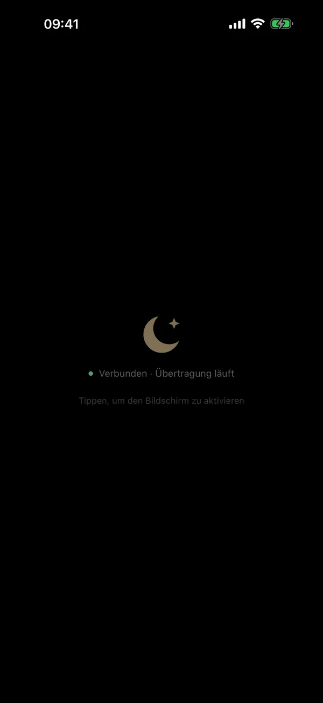

Babyfoon app. Alleen jij kijkt mee.
LaLeLu maakt van je iPhone, iPad en Mac een privé babyfoon met camera. Gratis, zonder abonnement, zonder account. End-to-end versleuteld.
Voor iPhone, iPad en Mac. Twee Apple-apparaten nodig.

- Gratis – 0 €
- Geen abonnement
- Geen account
- Geen reclame
- Geen tracking
Babyfoon met camera.
Alles gratis.
Eén apparaat blijft als babyunit op de babykamer, het andere wordt de ouderunit. Combineer iPhone, iPad en Mac zoals je wilt.
- Live beeld en geluidVia wifi en onderweg via mobiel internet.
- NachtzichtHet scherm van de babyunit wordt een lampje.
- Huilalarm op het apparaatAls melding, ook bij vergrendeld scherm.
- TerugpratenMet één druk op de knop, zonder op te staan.
- Slaapgeluiden met timerRuis, regen en zee.
- ActiviteitenoverzichtBlijft lokaal op je apparaat.
Licht uit.
Nachtzicht aan.
De babyunit blijft in de donkere babykamer. In de nachtmodus is het scherm bijna zwart, terwijl de verbinding gewoon doorloopt.
Met nachtzicht wordt het scherm een zacht lampje, rood of wit. Rood licht verstoort de slaap meestal minder.
Nachtzicht zet je ook vanaf je iPhone aan of uit, zonder de kamer in te lopen.


Je baby huilt.
Je iPhone weet het.
De huilherkenning draait volledig op de babyunit, met Apple SoundAnalysis. Hoort de app huilen of hoesten, dan krijg je een melding, ook bij vergrendeld scherm. Er gaat daarvoor geen audio naar de cloud.

Een zacht woordje.
Zonder op te staan.
Houd “Praten” ingedrukt en je stem klinkt in de babykamer. Laat los, en het is weer stil.

Probeer het: houd “Praten” ingedrukt.
Ruis aan.
Timer loopt.
Witte, roze en bruine ruis, plus regen en zee. Je start de geluiden gemakkelijk vanaf je iPhone.
De timer loopt op de babyunit zelf en laat het geluid zacht uitfaden, ook als je iPhone tussendoor de verbinding verliest.
Kies 15, 30, 45 of 60 minuten, of zonder einde.
Je oude Mac
heeft een nieuwe baan.
Zet hem op de babykamer: met de ingebouwde of een aangesloten camera wordt hij de babyunit. Je iPhone is de ouderunit.


1–2 secondenZo snel staat de verbinding thuis meestal. Onderweg via mobiel internet vaak binnen een paar seconden.
Vrij te combinereniPhone, iPad of Mac op de babykamer, iPhone of iPad bij jou. Een oude iPhone is genoeg als babyunit.
Voor beide oudersMeerdere ouderunits kunnen tegelijk verbonden zijn, ook met verschillende Apple ID’s.
Babyfoon privacy:
niemand kijkt mee.
- End-to-end versleuteld.
- Beeld en geluid gaan rechtstreeks tussen je apparaten (WebRTC, DTLS-SRTP). Alleen apparaten die jij zelf hebt gekoppeld zien het beeld.
- Nooit opgenomen.
- Beeld en geluid worden nergens op een server of blijvend in de app bewaard.
- Herkenning op het apparaat.
- De geluidsanalyse gebeurt lokaal met Apple SoundAnalysis. Er gaat geen audio naar ons.
- Geen account, geen reclame, geen tracking.
- Voor het koppelen heb je genoeg aan je bestaande iCloud-toegang.
Eerlijk is eerlijk: LaLeLu gebruikt Apple (iCloud, push) en Cloudflare om de verbinding en de melding te regelen. Wat er wordt opgeslagen en hoe lang, staat volledig in de privacyverklaring (in het Engels).
Babyfoon zonder abonnement en zonder account
Veel babyfoon-apps vragen een abonnement, een aankoop per apparaat of een eigen account. LaLeLu niet.
| Criterium | LaLeLu | Gangbare babyfoon-apps |
|---|---|---|
| Prijs | Gratis, voor alle apparaten | vaak een abonnement of aankoop per platform |
| Account / aanmelden | Geen, alleen je bestaande iCloud-toegang om te koppelen | vaak is een eigen account nodig |
| Reclame en tracking | Geen reclame, geen tracking-SDK’s | soms reclame of analyse |
| Beeld en geluid | End-to-end versleuteld, nooit opgenomen | soms opgeslagen of verwerkt op cloudservers |
| Huilherkenning | Op het apparaat, geen audio naar de cloud | soms alleen een volumedrempel of cloudanalyse |
| Apparaten | iPhone, iPad en Mac, vrij te combineren | vaak één platform |
De vergelijking beschrijft algemene verschillen in de markt, niet één specifieke app.
In een paar minuten ingesteld
- Laden.Installeer LaLeLu op beide apparaten via de App Store.
- Kiezen.Kies “Babyunit” op het apparaat in de babykamer en “Ouderunit” op het andere.
- Koppelen.Koppel met een link of QR-code. Klaar.
Babyfoon-app: veelgestelde vragen
Is deze babyfoon-app echt gratis, zonder abonnement?
Ja. LaLeLu is een gratis babyfoon-app zonder abonnement, zonder reclame en zonder functies achter een betaalmuur. Er is geen proefperiode die afloopt.
Heb ik een account nodig om LaLeLu te gebruiken?
Nee. LaLeLu heeft geen eigen account en geen aanmelding. Om je twee apparaten eenmalig te koppelen gebruikt de app de iCloud-toegang die je al hebt op je iPhone, iPad of Mac.
Worden beeld of geluid opgenomen of opgeslagen?
Nee. Beeld en geluid worden live en end-to-end versleuteld (WebRTC, DTLS-SRTP) rechtstreeks tussen je apparaten verstuurd en worden nergens op een server of in de app opgenomen. Is een directe verbinding niet mogelijk, dan loopt de nog steeds versleutelde stream via een Cloudflare-relay die hem niet kan ontsleutelen.
Welke apparaten heb ik nodig voor een babyfoon met camera?
Twee Apple-apparaten: één blijft op de babykamer als babyunit (iPhone, iPad of Mac met camera en microfoon), het andere is de ouderunit (iPhone of iPad). Een oude iPhone is genoeg als babyunit. Android wordt niet ondersteund.
Kan ik mijn Mac als babyfoon gebruiken?
Ja. De Mac-app werkt als babyunit met de ingebouwde of een aangesloten camera en de microfoon. Die blijft op de babykamer, terwijl je iPhone de ouderunit is.
Werkt het ook buitenshuis, via mobiel internet?
Ja. Het verbindt via hetzelfde wifi-netwerk en ook via mobiel internet of andere netwerken. Beide apparaten hebben internet nodig. Thuis duurt het verbinden meestal een à twee seconden, onderweg vaak een paar seconden.
Hoe werkt de huilherkenning?
De geluidsherkenning draait volledig op de babyunit met Apple SoundAnalysis. Er gaat geen audio naar de cloud voor analyse en er wordt niets verzameld om mee te trainen. Hoort de app huilen of hoesten, dan krijg je een melding.
Krijg ik de melding ook als mijn iPhone vergrendeld is?
Ja. De melding komt binnen als pushbericht, ook bij vergrendeld scherm. Sta meldingen voor LaLeLu toe in de instellingen van je iPhone.
Hoe koppel ik de babyunit en de ouderunit?
Op het babyapparaat maak je een koppellink of QR-code, die je op het ouderapparaat opent of scant. Dat kost een paar minuten. De link is de sleutel van de koppeling, deel hem dus alleen met mensen die je vertrouwt.
Kunnen er meerdere ouderunits tegelijk verbonden zijn?
Ja. Meerdere ouderunits kunnen tegelijk verbonden zijn, zodat beide ouders op de hoogte blijven, ook met verschillende Apple ID's.
Hulp & support
Vragen, feedback of hulp nodig? Schrijf rechtstreeks naar de ontwikkelaar – er antwoordt een mens: moritz.wolf@a1.net. In de app vind je ook “Probleem melden / Feedback”.
Je babyfoon zit al in je broekzak.
Download LaLeLu gratis en zet in een paar minuten je privé babyfoon klaar.
Gratis in de App Store